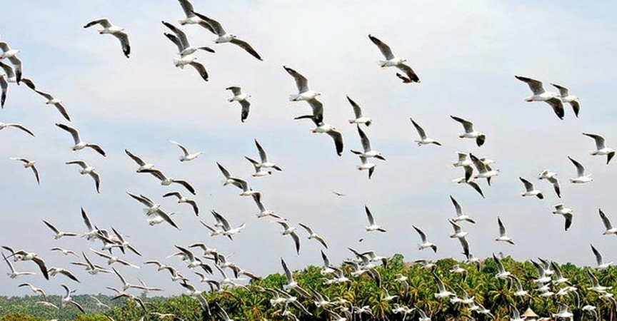
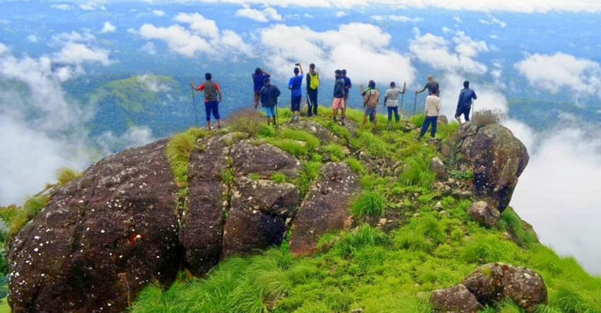

MALAPPURAM
Malappuram is one of the 14 districts in the Indian state of Kerala, with a coastline of 70 km. It is the most populous district of Kerala, which is home to around 13% of the total population of the state. The district was formed on 16 June 1969.

Kadalundi Bird Sanctuary

The Kadalundi Bird Sanctuary or the Kadalundi Nagaram, is definitely one of the best places to visit in Malappuram. It sits right at the spot where River Kadalundi Puzha flows into the Arabian Sea.Easily accessible from Malappuram and Kozhikode, the bird sanctuary is host to about 100 species of native birds, and about 60 species of migratory birds.
This includes Whimbrels, brahminy kites, terns, seagulls, sand plovers, sandpipers, green shanks and turn stones, all of whom appear to their respective seasons.
-
Location: Near Kadalundi Railway Station, Kadalundi, Kerala 673302
-
Timings: Everyday 8 AM to 8 PM
-
Entry Fees : INR 25 per person
Readmore
Keralamkundu Waterfalls

A basin at the base of waterfalls where people can enjoy a dip in the pond is something everyone wants to have an experience. Keralam Kundu Waterfalls are undoubtedly the best of all Malappuram Tourist Places, and that is why people keep flocking here to have an experience of the mystical.
The water flows in from the forest of the western ghat and forms a pool of crystal clear water at the base of the falls. Also, it is believed that the water has many medicinal properties.
-
Location: Silent Valley National Park, Karuvarakundu 676523, India
-
Timings: Everyday 8:30 to 6 PM
-
Entry Fees: INR 10 per person.
Readmore
Kodikuthimala

Another attraction of Malappuram that is often compared to the famous town of Ooty, Kodikuthimala is definitely a sight for the sore eyes. A hill station of Kerala, the place is perched on a height of about 522 m above sea level, and is the highest point in the Amminikkadan hills.
Once the spot where the Britishers once hoisted their flag, the spot was opened for tourism only a few decades ago, with a large area of the place marked already for future development projects. There is a watch tower on the top of the hill from where tourists can get a panoramic view.
-
Location: Perinthalmanna taluk, Malappuram district, Kerala, India.
-
Timings: No time.
-
Entry Fees: None
Readmore